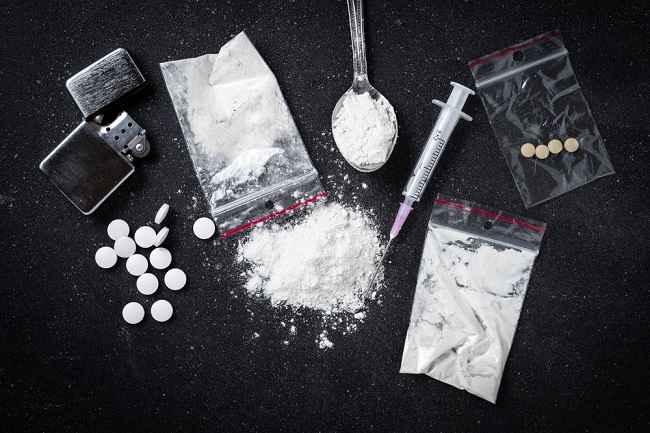

BAHAYA NARKOBA BAGI REMAJA
Ferlin, 23 Agustus 2023
Kompas.com
Penyalahgunaan narkoba merupakan salah satu masalah besar yang dihadapi oleh bangsa Indonesia. Karena saat ini sudah banyak generasi muda kita yang menjadi korban barang terlarang tersebut. Tentu hal itu dapat merusak generasi muda bangsa Indonesia. Generasi muda sebagai penerus bangsa diharapkan mampu memajukan bangsa melalui kecerdasan dan prestasinya. Akan tetapi, saat ini banyak generasi muda kita yang secara perlahan digerogoti oleh zat adiktif itu. Hal tersebut menyebabkan dampak yang besar bagi generasi muda saat ini, citra generasi muda yang dikenal cerdas dan berprestasi akan luntur akibat penyalahgunaan zat adiktif yang bisa merusak syaraf yang menyebabkan generasi muda tidak dapat berfikir jernih. Selanjutnya mereka akan merasa ketergantungan pada obat yang menyebabkan seseorang untuk mengonsumsi obat-obatan terlarang secara berulang-ulang dan berkesinambungan. Hal tersebut sangatlah berbahaya bagi generasi mudah Bangsa Indonesia. Lalu, apa bahaya narkoba jika dikonsumsi oleh remaja ? Di Indonesia pada tahun 2017 para pemakai narkoba berada pada rentang usia 11-59 tahun. Dimana pada rentang usia tersebut terdapat usia produktif atau usia pelajar . Berawal dari ingin coba-coba atau sekedar ikut-ikutan hingga pada akhirnya mengalami ketergantungan. Ada beberapa dampak negative akibat penyalahgunaan narkoba pada remaja, diantaranya:
Lalu bagaimana pencegahan agar terhindar dari bahaya Narkoba? Upaya pencegahan penyalahgunaan narkoba dikalangan remaja merupakan tanggung jawab kita bersama. Semua pihak harus terlibat dalam mencegah remaja terjerumus dalam menggunakan narkoba, mulai dari orang tua, guru dan masyarakat yang harus berperan aktif dalam mewaspadai dan mencegah ancaman narkoba terhadap para remaja. Kita juga harus selalu mengingatkan para remaja untuk mengisi waktu luang mereka dengan kegitan yang bersifat positif, lalu mengingatkan bahwa ada keluarga yang sangat menyayangi mereka dan selalu menciptakan komunikasi yang baik dengan mereka. Disamping beberapa upaya diatas, bisa juga dilakuka kerja sama dengan pihak yang berwenang untuk melaksanakan sosialisasi P4GN dengan cara yang dapat diterima oleh para remaja, atau dengan mengadakan razia di tempat yang potensial terjadi penyalahgunaan narkoba.
TERKAIT
WASPADA!!!! INI LAH MACAM MACAM JENIS NARKOBA
Popular Post

Follow Me
https://instagram.com/kompascom